20 September 2026. These are local frontend captures using deterministic API fixtures. No production records or backend services were changed. Missing scenario catalog options or map values in these fixtures do not represent live data availability.
Implementation and validation · Workplan and deferred backend backlog · Original Figma comparison
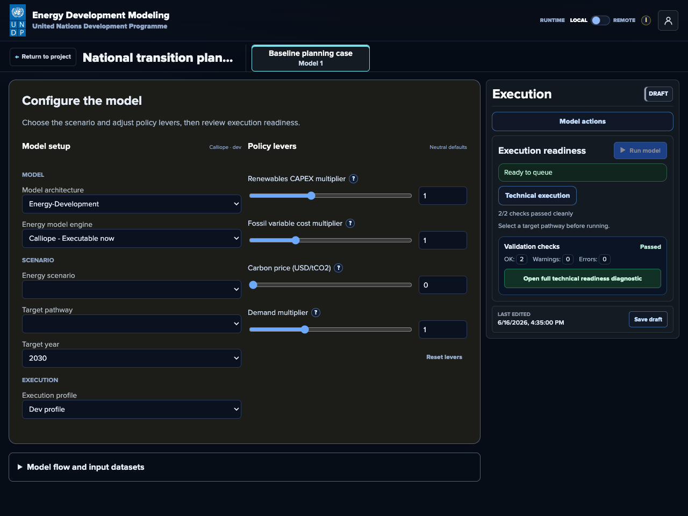
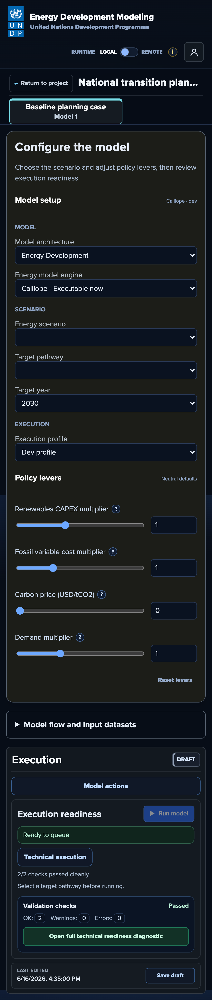
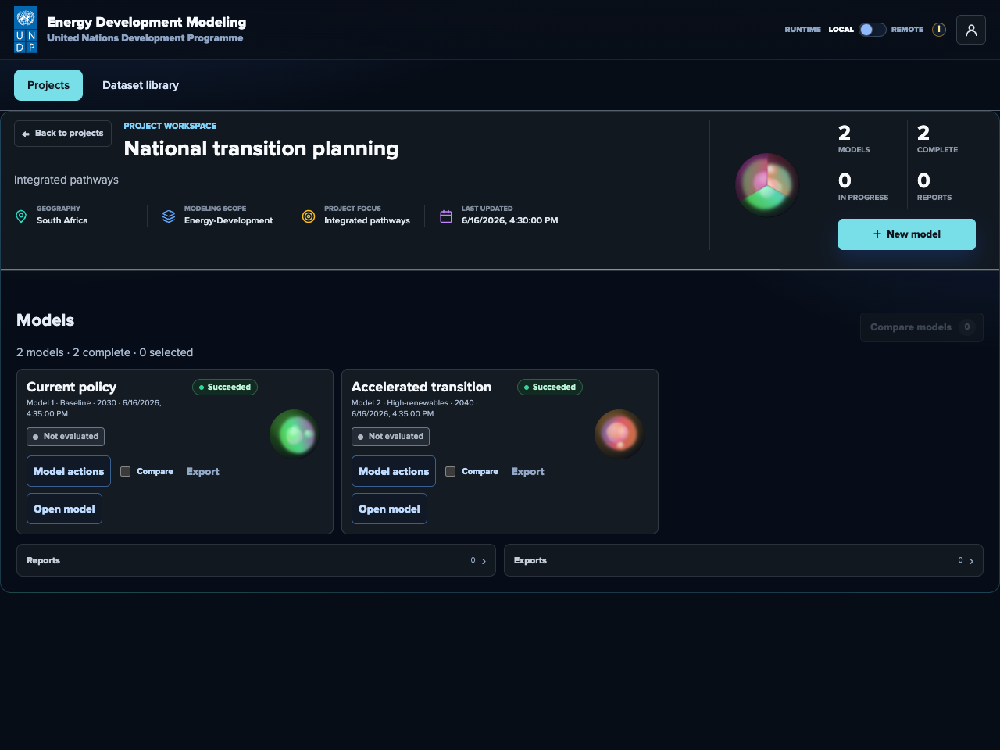
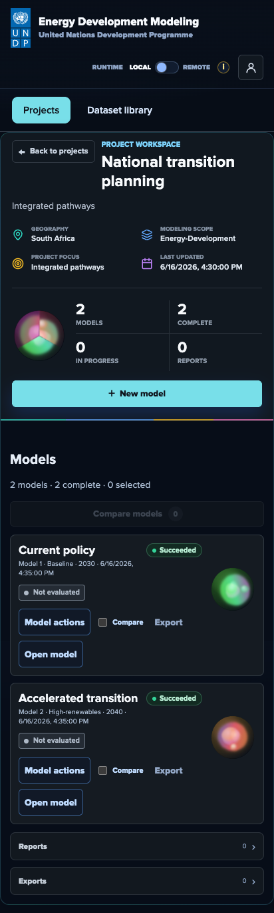
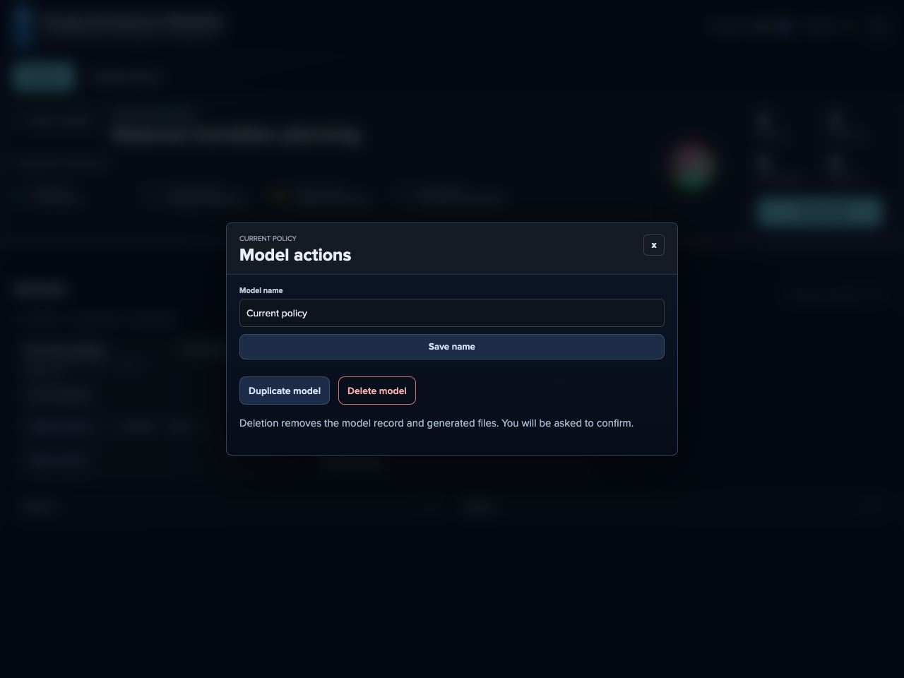
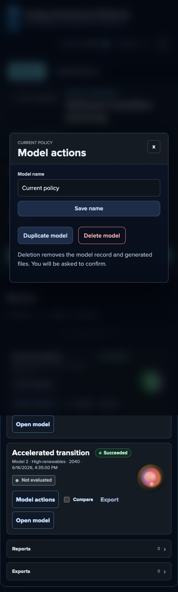
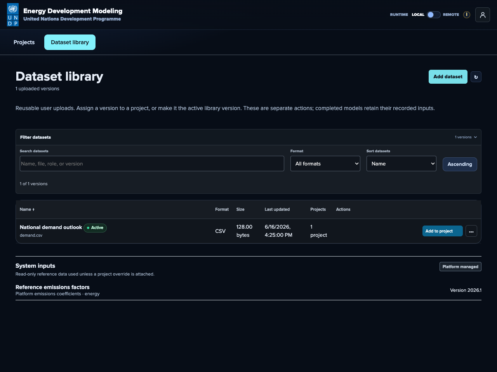
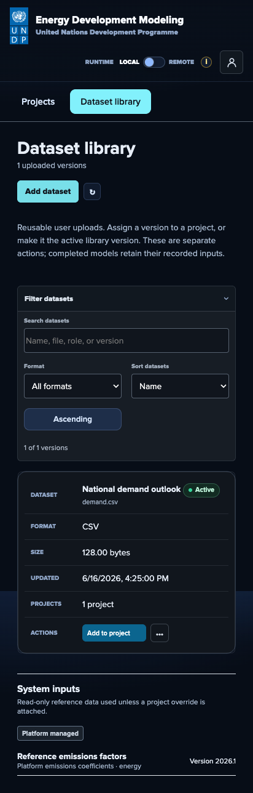
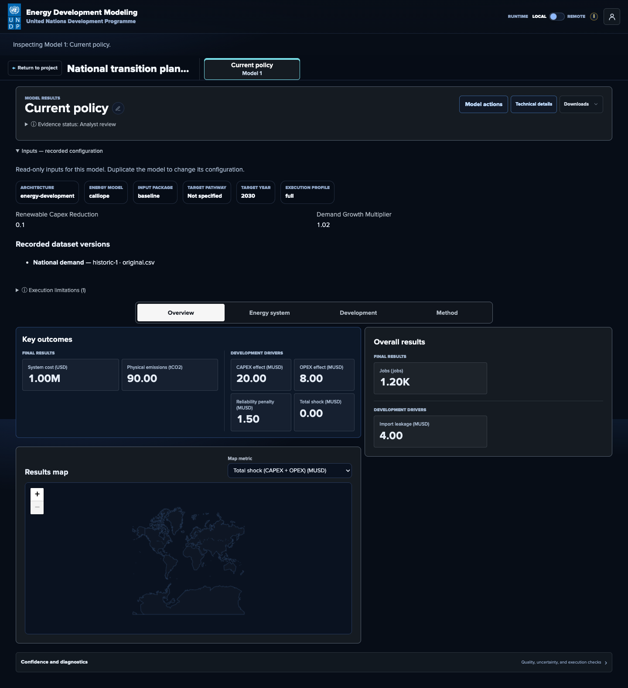
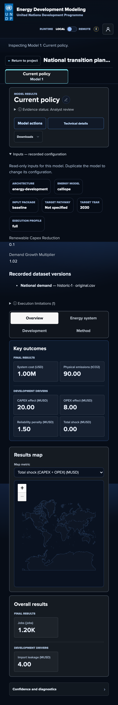
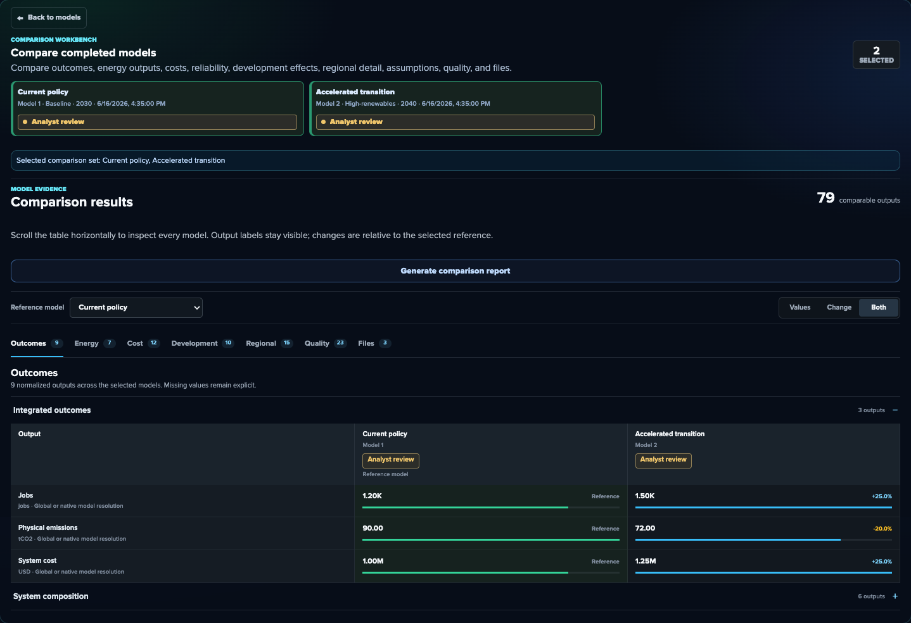
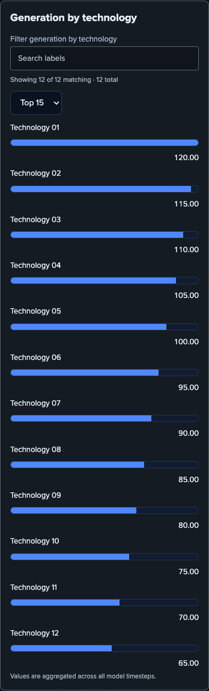